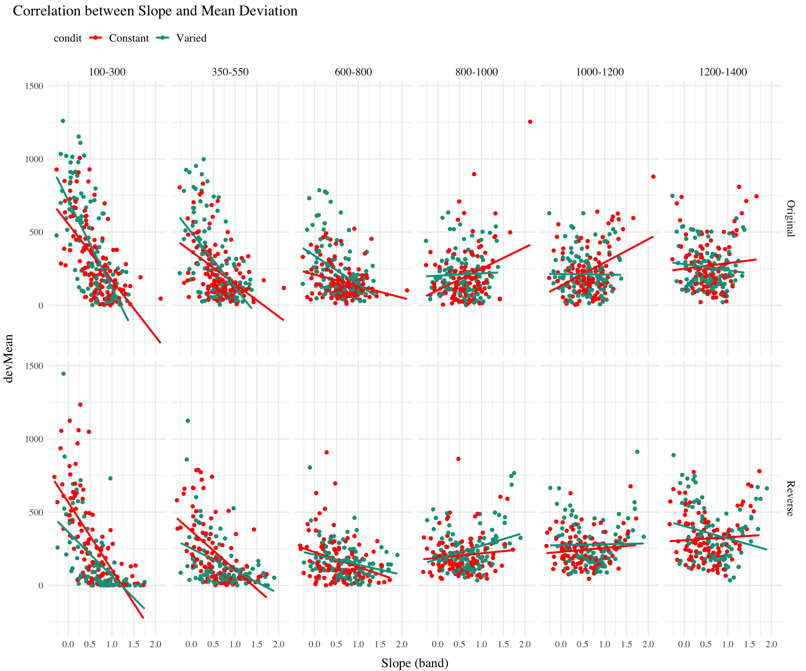

pacman::p_load('tidyverse','data.table','lme4','lmerTest','knitr','kableExtra','cowplot','gghalves','here')d<-readRDS(here("data/dPrune-07-27-23.rds"))source(here("Functions/Display_Functions.R"))dtest<-d%>%filter(expMode%in%c("test-Nf","test-train-nf"))%>%group_by(id,lowBound)%>%mutate(nBand=n(),band=bandInt,id=factor(id))%>%group_by(id)%>%mutate(nd=n_distinct(lowBound))# unique(dtest[dtest$nd==4,]$sbjCode) # 7 in wrong conditiondtest<-dtest%>%group_by(id,lowBound)%>%filter(nBand>=5&nd==6)# for any id that has at least 1 nBand >=5, remove all rows with that id. dtest<-dtest%>%group_by(id)%>%filter(!id%in%unique(dtest$id[dtest$nBand<5]))dtestAgg<-dtest%>%group_by(id,condit,bandOrder,fb,vb,band,lowBound,highBound,bandInt)%>%mutate(vxCapped=ifelse(vx>1600,1600,vx))%>%summarise(vxMean=mean(vx),devMean=mean(dist),vxMed=median(vx),devMed=median(dist), vxMeanCap=mean(vxCapped),.groups ="keep")
naive model that fits single slope and intercept to all subjects
Code
# Fit a model on all the data pooled togetherm_pooled<-lm(vxMean~band, dtestAgg)# Repeat the intercept and slope terms for each participantdf_pooled<-tibble( Model ="Complete pooling", id =unique(dtestAgg$id), Intercept =coef(m_pooled)[1], Slope_band =coef(m_pooled)[2])#head(df_pooled)# print the coefficents and residual of the modelsummary(m_pooled)
Call:
lm(formula = vxMean ~ band, data = dtestAgg)
Residuals:
Min 1Q Median 3Q Max
-881.05 -214.32 -41.11 176.71 1299.96
Coefficients:
Estimate Std. Error t value Pr(>|t|)
(Intercept) 480.61722 11.92601 40.30 <2e-16 ***
band 0.59216 0.01559 37.98 <2e-16 ***
---
Signif. codes: 0 '***' 0.001 '**' 0.01 '*' 0.05 '.' 0.1 ' ' 1
Residual standard error: 301.6 on 2695 degrees of freedom
Multiple R-squared: 0.3487, Adjusted R-squared: 0.3484
F-statistic: 1443 on 1 and 2695 DF, p-value: < 2.2e-16
Fit no pooling model (individual fit for each subject)
Code
df_no_pooling<-lmList(vxMean~band|id, dtestAgg)%>%coef()%>%rownames_to_column("id")%>%rename(Intercept =`(Intercept)`, Slope_band =band)%>%add_column(Model ="No pooling")# print average coefficients and average residual for the modelsummary(df_no_pooling)
id Intercept Slope_band Model
Length:461 Min. :-461.2 Min. :-0.4938 Length:461
Class :character 1st Qu.: 184.8 1st Qu.: 0.2604 Class :character
Mode :character Median : 399.2 Median : 0.5927 Mode :character
Mean : 475.0 Mean : 0.6075
3rd Qu.: 733.1 3rd Qu.: 0.9347
Max. :1657.5 Max. : 2.3819
Code
# print average residual of no pooling modelsummary(df_no_pooling$vxMean~df_no_pooling$band|df_no_pooling$id)
Length Class Mode
3 formula call
Code
# sort the dataframe by the value of slope_band, highest to lowesttestSlopeIndv<-df_no_pooling%>%arrange(desc(Slope_band))# Add a condit column to the dataframe, matching condition based on the value in dtestAgg for each sbjCodetestSlopeIndv<-testSlopeIndv%>%left_join(dtestAgg%>%ungroup()%>%select(id, condit)%>%distinct(), by ="id")# Add a rank column to the dataframe, based on the value of slope_band. Smallest rank for highest value.testSlopeIndv<-testSlopeIndv%>%group_by(condit)%>%mutate(nGrp=n(),rank =nGrp-rank(Slope_band)+1, quantile =cut(rank, breaks =4, labels =c("1st", "2nd", "3rd", "4th")), quintile=cut(rank,breaks=5,labels=c("1st", "2nd", "3rd", "4th","5th")), decile=cut(rank,breaks=10,labels=c(1:10)))%>%#select(-n)%>%arrange(rank)# Reorder the sbjCode column so that the sbjCode with the highest slope_band is firsttestSlopeIndv$id<-factor(testSlopeIndv$id, levels =testSlopeIndv$id)#head(testSlopeIndv)
Some individual plots showing the best fitting line against testing behavior (x velocity).
Sample of high, and low discriminating subjects (i.e. highest and lowest slopes)
Mean Vx for each band shown via dot.
correct bands shown with translucent rectangles
Code
# create plotting function that takes in a dataframe, and returns ggplot object#rewrite plotSlope function to take line color as a function argument, and set the color of abline to that argumentplotSlope<-function(df,title="",colour=NULL){rectWidth=50df%>%ggplot()+aes(x =band, y =vxMean)+# Set the color mapping in this layer so the points don't get a colorgeom_abline(aes(intercept =Intercept, slope =Slope_band), size =.75,colour=colour,alpha=.2)+geom_point(aes(color=vb))+facet_wrap("id")+geom_rect(aes(xmin=band-rectWidth,xmax=band+rectWidth,ymin=band,ymax=highBound,fill=vb),alpha=.1)+geom_segment(aes(x=band-rectWidth,xend=band+rectWidth,y=highBound,yend=highBound),alpha=1,linetype="dashed")+geom_segment(aes(x=band-rectWidth,xend=band+rectWidth,y=band,yend=band),alpha=1,linetype="dashed")+labs(x ="Velocity Band", y ="vxMean")+scale_x_continuous(labels=sort(unique(df$band)),breaks=sort(unique(df$band)))+ggtitle(title)+theme(legend.position ="none")+theme_classic()+guides(fill="none",color="none")}tv<-testSlopeIndv%>%left_join(dtestAgg, by =c("id","condit"))%>%filter(condit=="Varied",rank<=6)%>%plotSlope(.,colour="black",title="Largest Individually fit Varied Sbj. Slopes")tc<-testSlopeIndv%>%left_join(dtestAgg, by =c("id","condit"))%>%filter(condit=="Constant",rank<=6)%>%plotSlope(.,colour="black",title="Largest Individually fit Constant Sbj. Slopes")bv<-testSlopeIndv%>%left_join(dtestAgg, by =c("id","condit"))%>%filter(condit=="Varied",rank>=nGrp-5)%>%plotSlope(.,colour="black",title="Smallest Varied Sbj. Slopes")bc<-testSlopeIndv%>%left_join(dtestAgg, by =c("id","condit"))%>%filter(condit=="Constant",rank>=nGrp-5)%>%plotSlope(.,colour="black",title="Smallest Constant Sbj. Slopes.")title=ggdraw()+draw_label("Highest and Lowest Slope Values",fontface ='bold',x=0,hjust=0)+theme(plot.margin =margin(0, 0, 0, .5))plot_grid(title,NULL,tv,tc,bv,bc,NULL,ncol=2,rel_heights =c(.1,1,1))
Fit partial pooling model (linear mixed model with random slope and intercept)
Code
bm1<-lmer(vxMed~1+band+(1+band|id), dtestAgg, control =lmerControl(optimizer ="bobyqa", optCtrl =list(maxfun =3e5)))arm::display(bm1)
lmer(formula = vxMed ~ 1 + band + (1 + band | id), data = dtestAgg,
control = lmerControl(optimizer = "bobyqa", optCtrl = list(maxfun = 3e+05)))
coef.est coef.se
(Intercept) 455.71 18.10
band 0.61 0.02
Error terms:
Groups Name Std.Dev. Corr
id (Intercept) 370.15
band 0.46 -0.79
Residual 138.09
---
number of obs: 2697, groups: id, 461
AIC = 36583.8, DIC = 36573.6
deviance = 36572.7
Linear mixed model fit by REML. t-tests use Satterthwaite's method [
lmerModLmerTest]
Formula: vxMed ~ 1 + band + (1 + band | id)
Data: dtestAgg
Control: lmerControl(optimizer = "bobyqa", optCtrl = list(maxfun = 3e+05))
REML criterion at convergence: 36571.8
Scaled residuals:
Min 1Q Median 3Q Max
-3.4138 -0.4608 -0.0159 0.4495 5.0446
Random effects:
Groups Name Variance Std.Dev. Corr
id (Intercept) 1.370e+05 370.1522
band 2.084e-01 0.4565 -0.79
Residual 1.907e+04 138.0887
Number of obs: 2697, groups: id, 461
Fixed effects:
Estimate Std. Error df t value Pr(>|t|)
(Intercept) 455.70935 18.09580 457.64524 25.18 <2e-16 ***
band 0.61216 0.02248 456.22667 27.24 <2e-16 ***
---
Signif. codes: 0 '***' 0.001 '**' 0.01 '*' 0.05 '.' 0.1 ' ' 1
Correlation of Fixed Effects:
(Intr)
band -0.801
optimizer (bobyqa) convergence code: 0 (OK)
Model failed to converge with max|grad| = 0.0852438 (tol = 0.002, component 1)
Model is nearly unidentifiable: very large eigenvalue
- Rescale variables?
Model is nearly unidentifiable: large eigenvalue ratio
- Rescale variables?
Code
df_models<-bind_rows(df_pooled, df_no_pooling, df_partial_pooling)%>%left_join(dtestAgg, by =c("id"))
Warning in left_join(., dtestAgg, by = c("id")): Detected an unexpected many-to-many relationship between `x` and `y`.
Row 1 of `x` matches multiple rows in `y`.
Row 1 of `y` matches multiple rows in `x`.
If a many-to-many relationship is expected, set `relationship =
"many-to-many"` to silence this warning.
Code
#filter only testSlopeIndv with Rank < 3testSlopeIndv[testSlopeIndv$rank<10,]$id
df_models%>%filter(id%in%testSlopeIndv[testSlopeIndv$rank<10,]$id)%>%ggplot()+aes(x =band, y =vxMed)+geom_abline(aes(intercept =Intercept, slope =Slope_band, color =Model), linewidth=.75)+geom_point()+facet_wrap("id")+labs(x ="band", y ="vxMean")
Code
# filter to only retain the no pooling and partial pooling models. # Compare the average slope and intercepts between constant and varied condits. Use barplots with standard error barsdf_models<-bind_rows(df_pooled, df_no_pooling, df_partial_pooling)%>%left_join(dtestAgg, by =c("id"))
Warning in left_join(., dtestAgg, by = c("id")): Detected an unexpected many-to-many relationship between `x` and `y`.
Row 1 of `x` matches multiple rows in `y`.
Row 1 of `y` matches multiple rows in `x`.
If a many-to-many relationship is expected, set `relationship =
"many-to-many"` to silence this warning.
Code
grpAvg<-df_models%>%filter(Model%in%c("No pooling", "Partial pooling"))%>%group_by(id,Model)%>%slice(1)%>%group_by(Model, condit)%>%summarise( n=n(), Intercept =mean(Intercept), Slope_band =mean(Slope_band),)%>%mutate( Intercept_se =sd(Intercept)/sqrt(n), Slope_band_se =sd(Slope_band)/sqrt(n), .groups="keep")#head(grpAvg)p1=grpAvg%>%ggplot()+aes(x =Model, y =Slope_band, fill =condit)+geom_col(position ="dodge")+geom_errorbar(aes(ymin =Slope_band-Slope_band_se, ymax =Slope_band+Slope_band_se), width =0.2, position =position_dodge(0.9))+labs(x ="Model", y ="Slope (band)")+theme(legend.position ="top", legend.justification ="left")+ggtitle("Comparing Slopes between Conditions - Both pooling models")p2=grpAvg%>%ggplot()+aes(x =Model, y =Intercept, fill =condit)+geom_col(position ="dodge")+geom_errorbar(aes(ymin =Intercept-Intercept_se, ymax =Intercept+Intercept_se), width =0.2, position =position_dodge(0.9))+labs(x ="Model", y ="Intercept")+theme(legend.position ="top", legend.justification ="left")+ggtitle("Comparing Intercepts between Conditions - Both pooling models")# For the partial pooling model, visualize the correlation between the intercept and slope for each subject.# Use geom_smooth to fit a linear model to the data, and plot the line of best fit.p3=df_models%>%filter(Model=="Partial pooling")%>%ggplot()+aes(x =Intercept, y =Slope_band)+geom_point()+geom_smooth(method ="lm", se =FALSE)+labs(x ="Intercept", y ="Slope (band)")+theme(legend.position ="top", legend.justification ="left")+ggtitle("Correlation between Fit Slope and Intercept (Mixed Effects model)")# For the partial pooling model, visualize the correlation between slope and devMean for each subject.# Use geom_smooth to fit a linear model to the data, and plot the line of best fit.p4=df_models%>%filter(Model=="Partial pooling")%>%ggplot()+aes(x =Slope_band, y =devMean)+geom_point()+geom_smooth(method ="lm", se =FALSE)+labs(x ="Slope (band)", y ="devMean")+theme(legend.position ="top", legend.justification ="left")+ggtitle("Correlation between Fit Slope and testing performance (Mixed Effects model)")# For the partial pooling model, visualize the correlation between Intercept and devMean for each subject.p5=df_models%>%filter(Model=="Partial pooling")%>%ggplot()+aes(x =Intercept, y =devMean)+geom_point()+geom_smooth(method ="lm", se =FALSE)+labs(x ="Intercept", y ="devMean")+theme(legend.position ="top", legend.justification ="left")+ggtitle("Correlation between Fit Intercept and testing performance (Mixed Effects model)")title=ggdraw()+draw_label("Examining the Fit Slopes and Intercepts",fontface ='bold',x=0,hjust=0)+theme(plot.margin =margin(0, 0, 0, .5))plot_grid(title,NULL,p1,p2,p3,p4,p5,ncol=2,rel_heights =c(.15,1,1,1))
Correlation between fit parameters (Slope and Intercept) and testing Vx
Noteworthy that The correlation between slope and Vx is strongest for the slowest bands (100-300 and 350-550), for both original and reverse ordered groups. The slow positions are extrapolation for the Original ordered group, and trained by the reverse ordered group.
Fairly similar patterns for Slope and Intercept
Code
# For the partial pooling model, visualize the correlation between slope and devMean for each subject. Facet by vb~catOrder. Group and color by condit. # Use geom_smooth to fit a linear model to the data, and plot the line of best fit.df_models%>%filter(Model=="Partial pooling")%>%ggplot()+aes(x =Slope_band, y =vxMed, color =condit)+geom_point()+geom_smooth(method ="lm", se =FALSE)+labs(x ="Slope (band)", y ="Median Vx")+theme(legend.position ="top", legend.justification ="left")+facet_grid(bandOrder~vb)+ggtitle("Correlation between Slope and Median VX")
`geom_smooth()` using formula = 'y ~ x'
Code
df_models%>%filter(Model=="Partial pooling")%>%ggplot()+aes(x =Intercept, y =vxMed, color =condit)+geom_point()+geom_smooth(method ="lm", se =FALSE)+labs(x ="Intercept", y ="Median Vx")+theme(legend.position ="top", legend.justification ="left")+facet_grid(bandOrder~vb)+ggtitle("Correlation between Intercept and Median Vx")
`geom_smooth()` using formula = 'y ~ x'
Correlation between parameters and Mean Deviation.
Here we see a powerful effect of slope for the slow bands (larger slopes tend to have smaller deviation)
Code
# For the partial pooling model, visualize the correlation between slope and devMean for each subject. Facet by vb~catOrder. Group and color by condit. # Use geom_smooth to fit a linear model to the data, and plot the line of best fit.df_models%>%filter(Model=="Partial pooling")%>%ggplot()+aes(x =Slope_band, y =devMean, color =condit)+geom_point()+geom_smooth(method ="lm", se =FALSE)+labs(x ="Slope (band)", y ="devMean")+theme(legend.position ="top", legend.justification ="left")+facet_grid(bandOrder~vb)+ggtitle("Correlation between Slope and Mean Deviation")
`geom_smooth()` using formula = 'y ~ x'

Code
df_models%>%filter(Model=="Partial pooling")%>%ggplot()+aes(x =Intercept, y =devMean, color =condit)+geom_point()+geom_smooth(method ="lm", se =FALSE)+labs(x ="Intercept", y ="devMean")+theme(legend.position ="top", legend.justification ="left")+facet_grid(bandOrder~vb)+ggtitle("Correlation between Intercept and Mean Deviation")